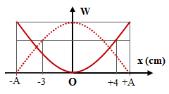
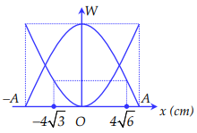
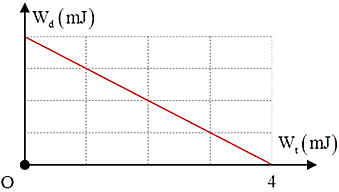
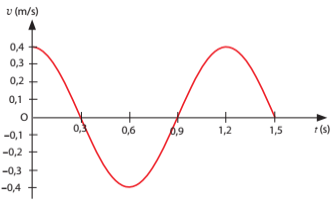

PHẦN III. Câu trắc nghiệm trả lời ngắn
Điền đáp số (có thể dùng dấu phẩy hoặc dấu chấm thập phân). Mỗi câu 0,25 điểm.
1
Một chất điểm có khối lượng 100 g dao động điều hòa có đồ thị biểu diễn sự phụ thuộc của động năng vào thời gian như hình vẽ. Lấy $\pi^2 = 10$. Khoảng thời gian giữa hai lần liên tiếp thế năng của chất điểm đạt cực đại là bao nhiêu giây (làm tròn kết quả đến chữ số hàng phần trăm)?

s
2
Động năng và thế năng của một vật dao động điều hòa phụ thuộc vào li độ theo đồ thị như hình vẽ. Biên độ dao động của vật bằng bao nhiêu cm?

cm
3

Một con lắc lò xo có độ cứng 50 N/m đang dao động điều hòa với đồ thị biểu diễn sự phụ thuộc của động năng và thế năng vào li độ như hình vẽ. Cơ năng của dao động bằng bao nhiêu J?
J
4
Một con lắc lò xo gồm quả cầu nhỏ khối lượng 1 kg và lò xo có độ cứng 50 N/m. Cho con lắc dao động điều hòa trên phương nằm ngang. Tại thời điểm vận tốc của quả cầu là 0,2 m/s thì gia tốc của nó là $-\sqrt3$ m/s$^2$. Cơ năng của con lắc là bao nhiêu Jun?
J
5
(CĐ − 2010) Một vật dao động điều hòa dọc theo trục Ox. Mốc thế năng ở vị trí cân bằng, ở thời điểm độ lớn vận tốc của vật bằng 50% vận tốc cực đại thì tỉ số giữa động năng và cơ năng của vật là?
6
Một con lắc đơn có chiều dài 1 m khối lượng 100 g dao động trong mặt phẳng thẳng đứng đi qua điểm treo tại nơi có g = 10 m/s$^2$. Lấy mốc thế năng ở vị trí cân bằng. Bỏ qua mọi ma sát. Khi sợi dây treo hợp với phương thẳng đứng một góc 30° thì tốc độ của vật nặng là 0,3 m/s. Cơ năng của con lắc đơn là bao nhiêu Jun? (Làm tròn đến 2 chữ số thập phân)
J
7
Một vật có khối lượng 2 kg dao động điều hòa có đồ thị vận tốc – thời gian như Hình. Xác định động năng cực đại của vật trong quá trình dao động theo đơn vị Jun.
J
8
Động năng dao động của một con lắc lò xo được mô tả theo thế năng dao động của nó bằng đồ thị như hình vẽ. Cho biết khối lượng của vật bằng 100 g, vật dao động giữa hai vị trí cách nhau 8 cm. Tính tần số góc của dao động của con lắc lò xo. (Làm tròn đến 2 chữ số thập phân)

rad/s
9
Một con lắc lò xo gồm quả cầu nhỏ khối lượng 1 kg và lò xo có độ cứng 50 N/m. Cho con lắc dao động điều hòa trên phương nằm ngang. Tại thời điểm vận tốc của quả cầu là 0,2 m/s thì gia tốc của nó là $-\sqrt{3}$ m/s². Cơ năng của con lắc là bao nhiêu Jun?
J
10
Một vật có khối lượng 2 kg dao động điều hòa có đồ thị vận tốc – thời gian như Hình 3.3. Xác định động năng cực đại của vật trong quá trình dao động theo đơn vị Jun.
Hình 3.3. Đồ thị vận tốc – thời gian của vật dao động.

Hình 3.3. Đồ thị vận tốc – thời gian của vật dao động.
J
11
Một con lắc lò xo gồm vật nhỏ có lò xo có độ cứng $20\,N/m$ dao động điều hòa với chu kì 2 s với li độ $x=A\text{cos}\left( \omega t+\varphi\right)\,(A>0)$. Khi pha của dao động là $\frac{\pi}{2}$ thì vận tốc của vật là $-20\sqrt{3}\text{ cm}/s$. Lấy $\pi^{2}=10$. Khi vật đi qua vị trí có li độ $3\pi\left( \text{ cm}\right)$ thì động năng của con lắc là bao nhiêu Jun?
J
12
Một con lắc lò xo gồm vật nhỏ có lò xo có độ cứng $20\,N/m$ dao động điều hòa với chu kì 2 s với li độ $x=A\text{cos}\left( \omega t+\varphi\right)\,(A>0)$. Khi pha của dao động là $\frac{\pi}{2}$ thì vận tốc của vật là $-20\sqrt{3}\text{ cm}/s$. Lấy $\pi^{2}=10$. Khi vật đi qua vị trí có li độ $3\pi\left( \text{ cm}\right)$ thì động năng của con lắc là bao nhiêu Jun?
J